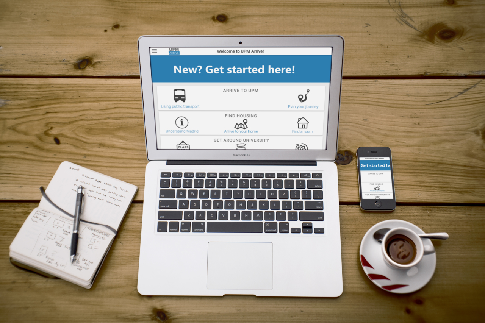
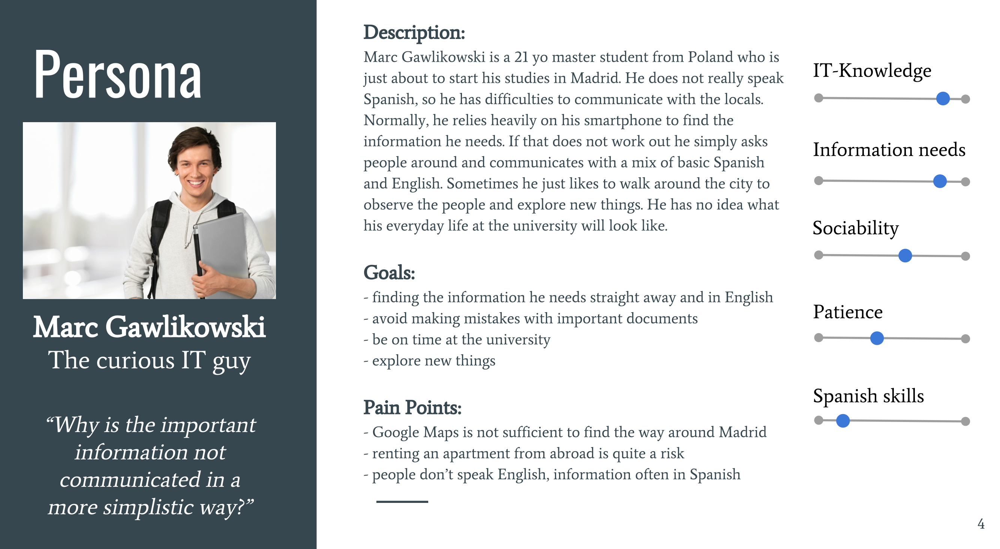
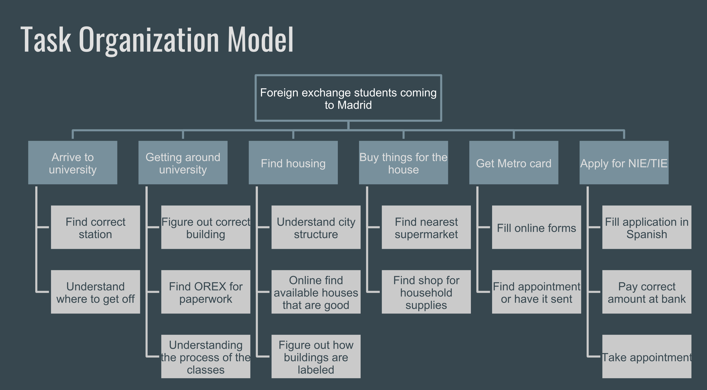
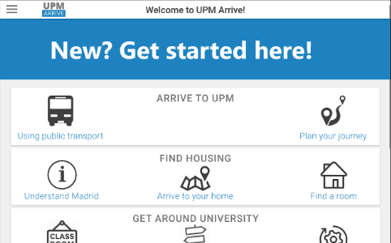
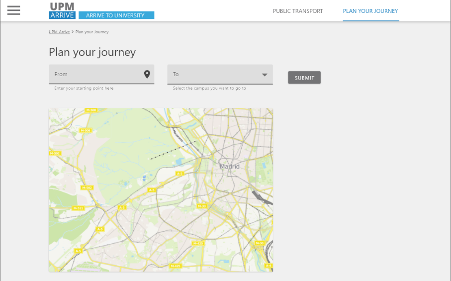
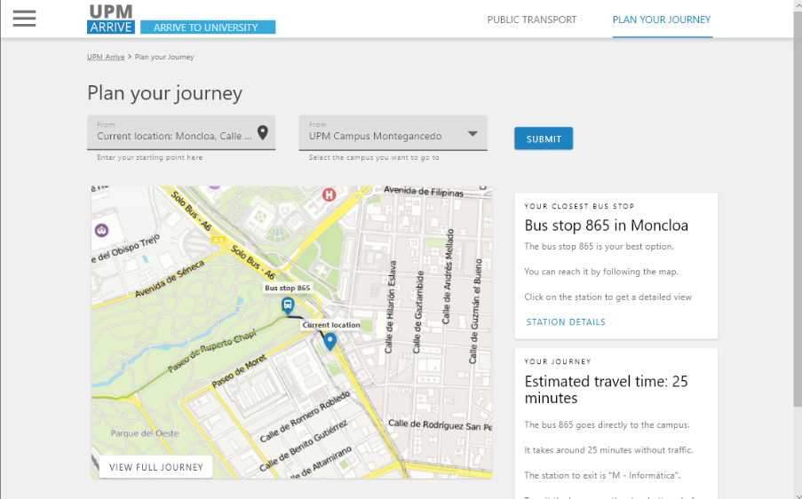
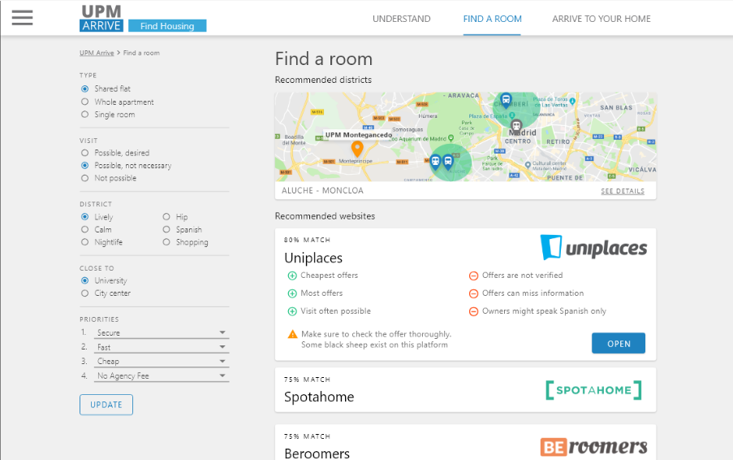

#1. What was done in this project?
The Universidad Politécnica de Madrid (UPM) wants to improve the situation of foreign exchange students coming to UPM. Therefore, they plan on creating a new web page to assist these new students in settling in Madrid.
Our task was to create two different prototypes focussing on two different usability criteria (which we had to decide on along the process). Before creating the prototypes we conducted interviews and specified the context of use. Next, we created different layout schemes and navigation maps for each prototype. Then we designed two low-fidelity prototypes (one with pen and paper, one with Balsamiq) and lastly extended them to two high-fidelity prototypes (one with Axure RP, one with Adobe XD).
I am going to focus mostly on the second prototype (pen and paper, Axure RP) because I was responsible for its design.This project was in collaboration with other three master students.
#2.Observation, planning and interviews
Before conducting the interviews, we put some thought on who, where, how, when, what, and why to perform the interview. Most importantly to answer the “What?”, we decided on asking the interviewees the following questions (and more):
Afterward, we conducted interviews with eight foreign students of the UPM, most of which were our fellow students. After we had collected all the data, we proceeded with the next step.
#3. Analysing the context of use
Based on the information gathered in the interview, we create a user profile, a persona, and a task organization model. We decided that learnability and efficiency are the most important usability criteria since most of the tasks only need to be performed/learned once and are something students just want to get done with quickly. Therefore, the Axure prototype was focussed on learnability and the Adobe XD prototype on efficiency.
Furthermore, we identified the tasks of finding a place to live and finding the way to the university as most crucial for foreign students, because these need to happen at the very start. Based on these tasks, we created two task scenarios.
For creating the prototypes and the subsequent testing we defined the tasks with specific input data, so that the prototypes could be adjusted to them:
- Find and open the best website for renting a room according to the following criteria. It should be in a shared flat, in a lively district, visiting the room before renting is desired, and most importantly it is cheap and secure.
- Find the best connection to the UPM Montegancedo campus with the exact bus station using the user’s current location.



#4. Low-Fidelity design
The usability criteria that we focused for this prototype was efficiency. For that reason, the navigation map was designed with direct access to specific task in every category. You can see the implemented screens highlighted in blue.
Throughout our design we try to make the information available more quickly, and provide more space to display it. The main page has six banners. One banner which would link to the registration page and the other ones to display the five categories. Every category includes buttons with the correspondent subtask. In that way, the user can access quickly to a particular task. The menu has the same structure as the main page. It shows the 5 categories with all the possible subtask that the user can do on them. In every sub page, the header contains some links for all the possible tasks of the category selected.
#5. High-Fidelity design
With efficiency in mind, this prototype was providing direct access to all main tasks, and combining information into fewer pages, so it can be navigated quicker.This prototype uses a hamburger menu to provide access to all functions from anywhere, so it is not necessary to go back to the home page.
When designing this prototype we followed the Google Material Design guidelines and its components. One of its design principles is the concept of paper sheet-like layers, which have a bit of shadow to create the sensation of stacked papers. This can be seen for example at the fixed header, and also at the usage of cards for blocks of content. Material design has established itself as a common theme pushed by Google, so many people are quite familiar with it, which we want to build on. The main theme for this prototype is simplicity, with the visual design being more in the background so it would not distract the users.
Layouting is done with a 12 column system, with 4 columns usually used for sidebars, and 8 columns for the main content, a common distribution in websites. The main menu features big letters which should help to quickly click on the correct element because they have large clickable areas.




#6. Conclusions
When conducting interviews, in the beginning, our interviewees reported very different issues they had encountered when they came to Madrid relative to mine. For me, it was clear, that the biggest problems would be applying for the NIE (a Spanish ID card) and finding a room. However, many interviewees didn’t report these issues, but others that were completely unexpected for me, such as finding the way to the university and knowing where to buy which products. So I realized I had to step back and open up to their problems, even if it would mean that my issues would not be solved.